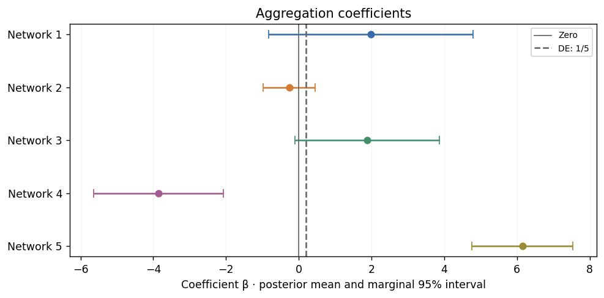
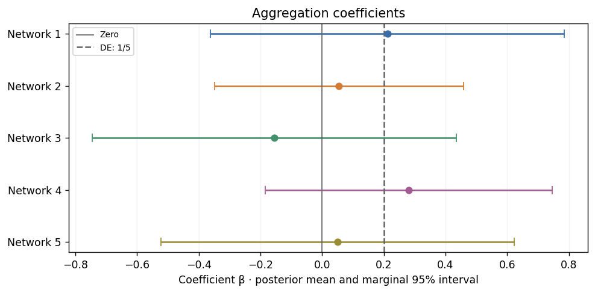
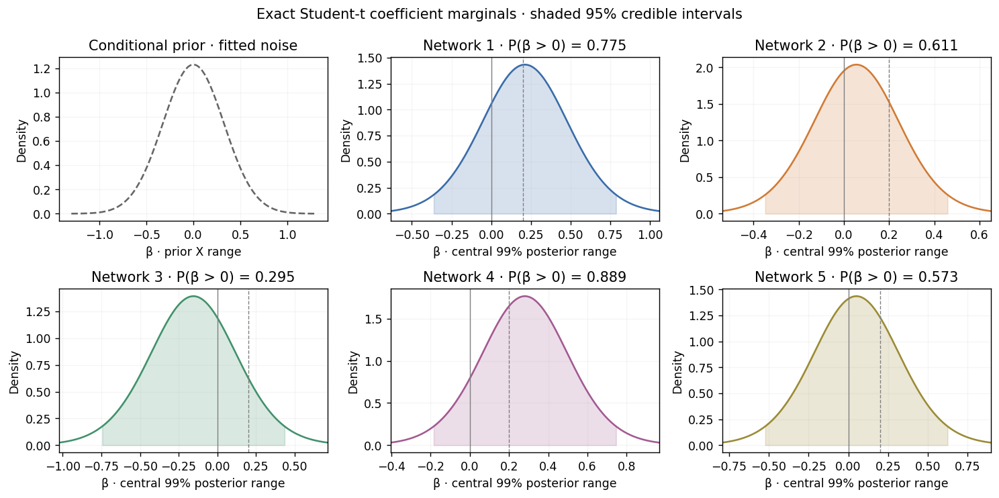
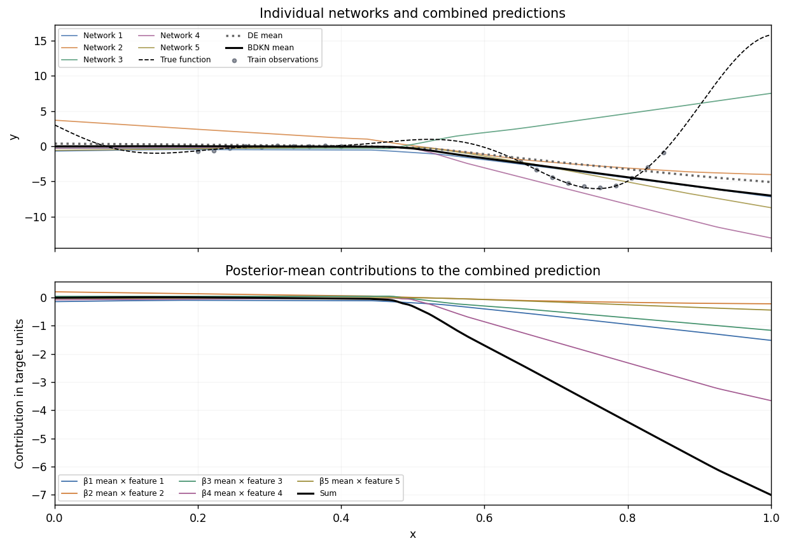
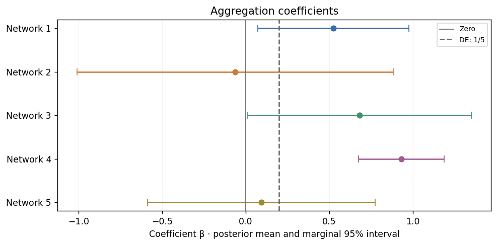
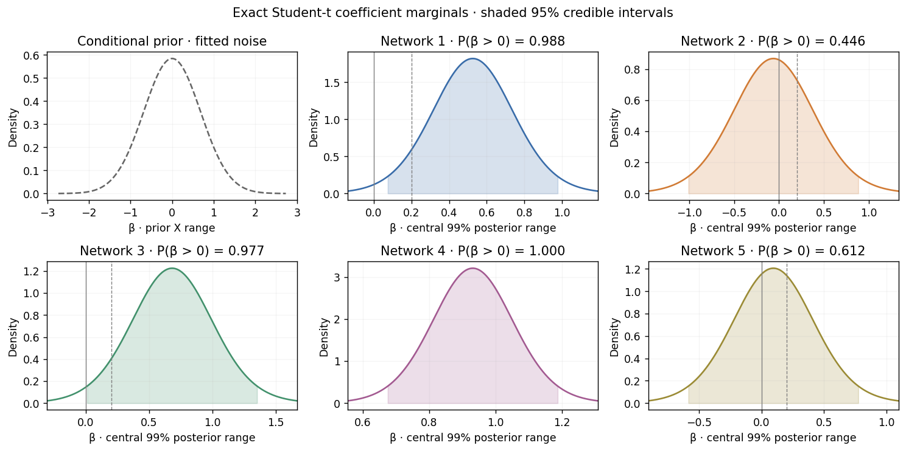
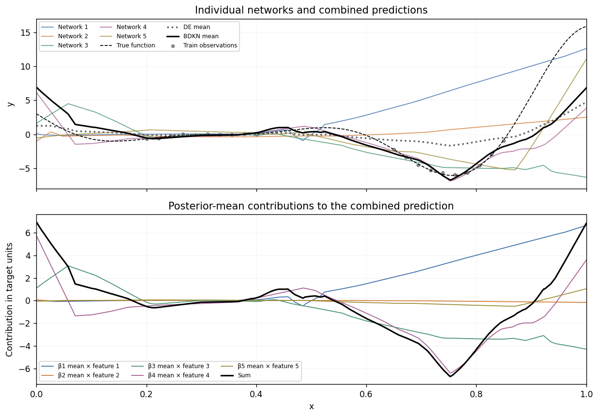
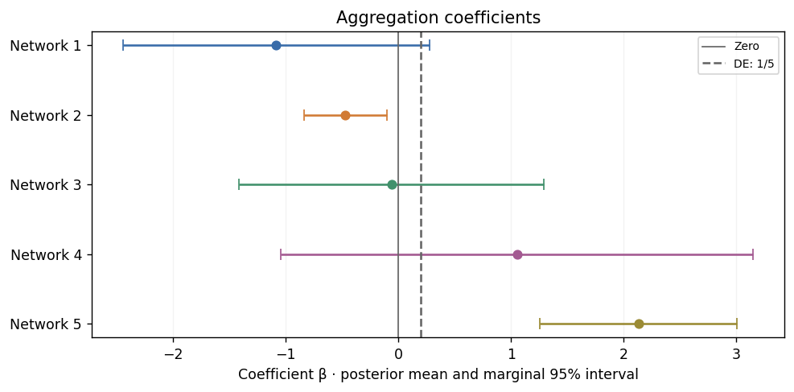
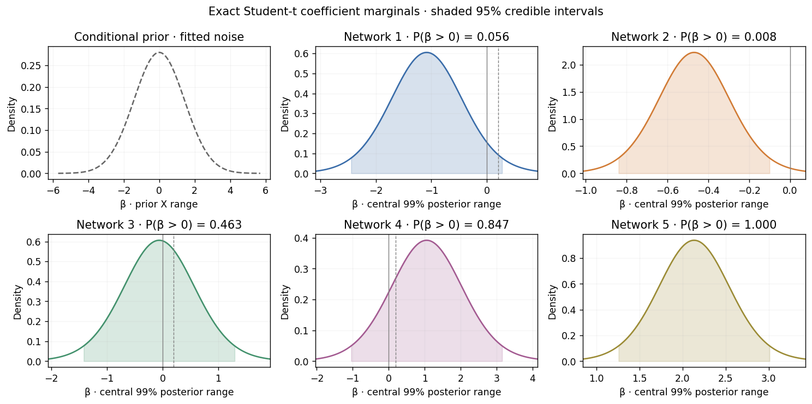
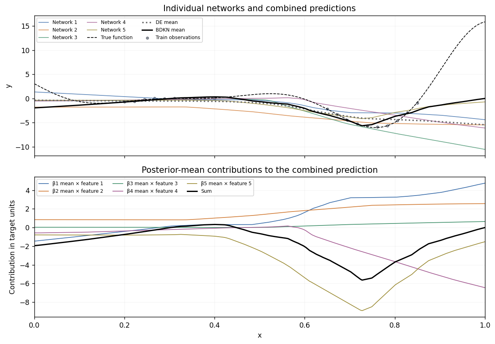

Regression comparison
Download resultsAggregation weights
Coefficients can be negative and need not sum to one. Intervals describe coefficient uncertainty; the dashed reference is DE’s fixed 1/H weight.
BDKN



Each density panel uses its own X range for readability; coefficient intervals above share a common axis. Prior reference conditions on fitted noise. Contribution shares use held-out inputs; test targets are used only for scoring.
| Network | β mean | 95% low | 95% high | P(β > 0) | Contribution share | Test RMSE | Test NLL |
|---|---|---|---|---|---|---|---|
| 1 | 1.98413 | -0.82135 | 4.78960 | 0.92214 | 0.09316 | 6.33172 | 2.61443 |
| 2 | -0.26203 | -0.97466 | 0.45060 | 0.22602 | 0.01751 | 6.96269 | 2.85838 |
| 3 | 1.88150 | -0.10312 | 3.86612 | 0.96904 | 0.12621 | 7.48989 | 9.28923 |
| 4 | -3.85127 | -5.63150 | -2.07105 | 0.00011 | 0.47302 | 10.59381 | 16.06180 |
| 5 | 6.14967 | 4.75819 | 7.54115 | 1.00000 | 0.29011 | 5.92139 | 22.68824 |
Functional repulsion · BDKN



Each density panel uses its own X range for readability; coefficient intervals above share a common axis. Prior reference conditions on fitted noise. Contribution shares use held-out inputs; test targets are used only for scoring.
| Network | β mean | 95% low | 95% high | P(β > 0) | Contribution share | Test RMSE | Test NLL |
|---|---|---|---|---|---|---|---|
| 1 | 0.21174 | -0.36213 | 0.78561 | 0.77475 | 0.22887 | 6.31403 | 2.91089 |
| 2 | 0.05509 | -0.34837 | 0.45856 | 0.61065 | 0.05946 | 5.61508 | 3.09348 |
| 3 | -0.15444 | -0.74425 | 0.43537 | 0.29548 | 0.16173 | 4.55392 | 2.34909 |
| 4 | 0.28080 | -0.18420 | 0.74581 | 0.88885 | 0.49344 | 8.42298 | 8.76165 |
| 5 | 0.05082 | -0.52175 | 0.62339 | 0.57251 | 0.05650 | 6.77119 | 7.17577 |
Weight repulsion · BDKN



Each density panel uses its own X range for readability; coefficient intervals above share a common axis. Prior reference conditions on fitted noise. Contribution shares use held-out inputs; test targets are used only for scoring.
| Network | β mean | 95% low | 95% high | P(β > 0) | Contribution share | Test RMSE | Test NLL |
|---|---|---|---|---|---|---|---|
| 1 | 0.52546 | 0.07410 | 0.97683 | 0.98764 | 0.32900 | 5.62066 | 2.78868 |
| 2 | -0.06219 | -1.00677 | 0.88239 | 0.44607 | 0.00681 | 4.10454 | 3.02823 |
| 3 | 0.68073 | 0.01043 | 1.35104 | 0.97657 | 0.32764 | 6.10491 | 2.66285 |
| 4 | 0.93140 | 0.67577 | 1.18703 | 1.00000 | 0.30440 | 3.85845 | 2.74735 |
| 5 | 0.09452 | -0.58663 | 0.77567 | 0.61239 | 0.03215 | 3.12208 | 2.28217 |
First-order repulsion · BDKN



Each density panel uses its own X range for readability; coefficient intervals above share a common axis. Prior reference conditions on fitted noise. Contribution shares use held-out inputs; test targets are used only for scoring.
| Network | β mean | 95% low | 95% high | P(β > 0) | Contribution share | Test RMSE | Test NLL |
|---|---|---|---|---|---|---|---|
| 1 | -1.08441 | -2.44264 | 0.27382 | 0.05571 | 0.21044 | 5.40595 | 2.61967 |
| 2 | -0.46963 | -0.83854 | -0.10072 | 0.00759 | 0.19043 | 6.24386 | 6.89631 |
| 3 | -0.06127 | -1.41661 | 1.29408 | 0.46291 | 0.02394 | 7.53582 | 49.81039 |
| 4 | 1.05538 | -1.04137 | 3.15213 | 0.84687 | 0.20340 | 5.95846 | 3.45449 |
| 5 | 2.13462 | 1.25905 | 3.01018 | 0.99997 | 0.37179 | 4.47482 | 4.39678 |